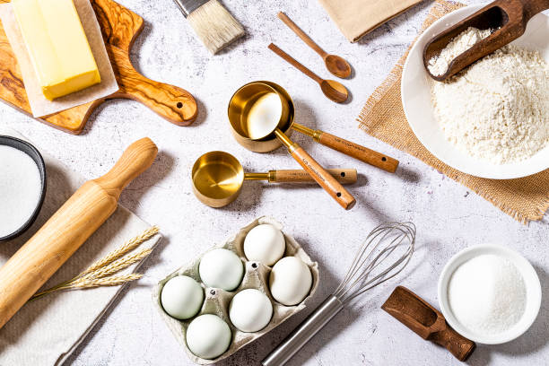

<html lang="en"></html>

<head>
    <title>Bootstrap Example</title>
    <meta charset="utf-8">
    <meta name="viewport" content="width=device-width, initial-scale=1">

    <!-- Bootstrap CSS -->
    <link rel="stylesheet" href="https://stackpath.bootstrapcdn.com/bootstrap/4.3.1/css/bootstrap.min.css">
    <!-- Font Awesome link -->
    <link rel="stylesheet" href="https://stackpath.bootstrapcdn.com/font-awesome/4.7.0/css/font-awesome.min.css">
    <!-- Stylesheet CSS -->
    <link rel="stylesheet" href="css/style.css">

    <!-- Optional JavaScript -->
    <!-- jQuery first, then Popper.js, then Bootstrap JS -->
    <script src="https://code.jquery.com/jquery-3.4.1.min.js"></script>
    <script src="https://cdnjs.cloudflare.com/ajax/libs/popper.js/1.14.7/umd/popper.min.js"></script>
    <script src="https://stackpath.bootstrapcdn.com/bootstrap/4.3.1/js/bootstrap.min.js"></script>

    <!-- Popover -->
    <script>
        $(function() {
            $('[data-toggle="popover"]').popover()
        })
    </script>

    <!-- Tooltip -->
    <script>
        $(function() {
            $('[data-toggle="tooltip"]').tooltip()
        })
    </script>

</head>

<body data-spy="scroll" data-target="#website-navbar"
      data-offset="100">
    <nav id="website-navbar" class="navbar navbar-expand-md
                                    navbar-light bg-white
                                    sticky-top">
        <a class="navbar-brand">
            
            Baking website
        </a>
        <div class="navbar-content">
            <ul class="navbar-nav">
                <li class="nav-item">
                    <a class="nav-link" href="#title-text">
                    Top of page </a>
                </li>
                
                <li class="nav-item">
                    <a class="nav-link" href="#main-pictures">
                    Types of food </a>
                </li>

                <li class="nav-item">
                    <a class="nav-link" href="#nature">
                       Recipes </a>
                </li>

            </ul> 
        </div>                     


    </nav>
    <div class="container">
        <!-- title-text -->
        <div class="row m-3" id="title-text">
            <div class="col-md-12">
                <br>
                <!-- Title Jumbotron -->
                <div class="jumbotron">
                    <div class="row">
                        <div class="col pt-5">
                            <h1 class="display-4">
                                Welcome to <span class="badge badge-danger">A Baking website </span>
                            </h1>

                        </div>
                        <div class="col-3">
                            
                        </div>
                    </div>
                </div>
            </div>
        </div>

        <!-- Main Picture -->
        <div class="row" id="main-pictures">
            <div class="col-md-12">
                <div class="alert alert-info alert-dismissible fade show">
                    <button type="button" class="close" data-dismiss="alert"> &times; </button> This site was created by C.N.Raaghav.
                </div>

                <div id="landmarks-carousel" class="carousel slide" data-ride="carousel">
                    <!-- Carousel Items -->
                    <div class="carousel-inner">
                        <div class="carousel-item active">
                            
                            <div class="carousel-caption">
                                <h1>Cake</h1>
                            </div>
                        </div>
                        <div class="carousel-item">
                            
                            <div class="carousel-caption">
                                <h1>cupcake</h1>
                            </div>
                        </div>
                        <div class="carousel-item">
                            
                            <div class="carousel-caption">
                                <h1>cookies</h1>
                            </div>
                        </div>
                    </div>

                    <!-- Carousel Controls -->
                    <a class="carousel-control-prev" href="#landmarks-carousel" data-slide="prev">
                        <span class="fa fa-chevron-left"></span>
                    </a>
                    <a class="carousel-control-next" href="#landmarks-carousel" data-slide="next">
                        <span class="fa fa-chevron-right"></span>
                    </a>

                    <!-- Carousel Indicators -->
                    <ol class="carousel-indicators">
                        <li data-target="#landmarks-carousel" data-slide-to="0" class="active"></li>
                        <li data-target="#landmarks-carousel" data-slide-to="1"></li>
                        <li data-target="#landmarks-carousel" data-slide-to="2"></li>
                    </ol>
                </div>
            </div>
        </div>


        <!-- Nature Gallery -->
        <div class="row py-3" id="nature">
            <div class="col-md-12 nature-gallery">
                <h2 class="nature-gallery-title">
                    Recipes
                </h2>

                <div class="card-deck">
                    <div class="card bg-danger">
                        

                        <div class="card-body">
                            <h4 class="card-title"> Cake</h4>
                            <p class="card-text">
                                Classic Chocolate Cake
Ingredients:

For the Cake:

1 3/4 cups (220g) all-purpose flour
1 1/2 cups (300g) granulated sugar
3/4 cup (65g) unsweetened cocoa powder
1 1/2 teaspoons baking powder
1 1/2 teaspoons baking soda
1 teaspoon salt
2 large eggs
1 cup (240ml) whole milk
1/2 cup (120ml) vegetable oil
2 teaspoons vanilla extract
1 cup (240ml) boiling water
For the Frosting:

1 cup (230g) unsalted butter, room temperature
3 1/2 cups (440g) powdered sugar
1/2 cup (45g) unsweetened cocoa powder
1/4 cup (60ml) heavy cream
2 teaspoons vanilla extract
A pinch of salt
Instructions:

Preheat your oven: to 350°F (175°C). Grease and flour two 9-inch round cake pans (or one 9x13-inch pan).

Mix the dry ingredients: In a large bowl, sift together the flour, sugar, cocoa powder, baking powder, baking soda, and salt.

Combine the wet ingredients: In another bowl, whisk the eggs, milk, vegetable oil, and vanilla extract until well combined.

Mix the batter: Gradually add the wet ingredients to the dry ingredients, mixing until smooth. Stir in the boiling water. The batter will be quite thin, but that's okay—it will make the cake moist.

Bake: Divide the batter evenly between the prepared pans. Bake for 30-35 minutes, or until a toothpick inserted into the center comes out clean.

Cool: Let the cakes cool in the pans for about 10 minutes, then turn them out onto wire racks to cool completely.

Make the frosting: In a large bowl, beat the butter until creamy. Gradually add the powdered sugar and cocoa powder, beating well. Add the heavy cream, vanilla extract, and a pinch of salt, and continue to beat until the frosting is light and fluffy.

Assemble and frost: Once the cakes are completely cool, spread frosting on the top of one layer, place the second layer on top, and frost the top and sides of the cake.
                            </p>
                        </div>
                    </div>

                    <div class="card bg-info">
                        

                        <div class="card-body">
                            <h4 class="card-title"> cupcake</h4>
                            <p class="card-text">
                                Classic Chocolate Cupcakes
Ingredients:

For the Cupcakes:

1 1/2 cups (190g) all-purpose flour
1 cup (200g) granulated sugar
1/3 cup (30g) unsweetened cocoa powder
1 teaspoon baking powder
1/2 teaspoon baking soda
1/4 teaspoon salt
1/2 cup (120ml) vegetable oil
2 large eggs
1 cup (240ml) buttermilk
2 teaspoons vanilla extract
1/2 cup (120ml) boiling water
For the Frosting:

1/2 cup (115g) unsalted butter, room temperature
2 cups (250g) powdered sugar
1/4 cup (20g) unsweetened cocoa powder
2 tablespoons heavy cream
1 teaspoon vanilla extract
A pinch of salt
Instructions:

Preheat your oven: to 350°F (175°C). Line a muffin tin with paper cupcake liners.

Mix the dry ingredients: In a medium bowl, whisk together the flour, sugar, cocoa powder, baking powder, baking soda, and salt.

Combine the wet ingredients: In a large bowl, whisk together the oil, eggs, buttermilk, and vanilla extract until well combined.

Mix the batter: Gradually add the dry ingredients to the wet ingredients, mixing just until combined. Stir in the boiling water. The batter will be thin, but that’s normal.

Fill the cupcake liners: Pour the batter into the cupcake liners, filling each about 2/3 full.

Bake: Bake for 18-20 minutes, or until a toothpick inserted into the center of a cupcake comes out clean.

Cool: Allow the cupcakes to cool in the tin for about 5 minutes, then transfer them to a wire rack to cool completely before frosting.

Make the frosting: In a medium bowl, beat the butter until creamy. Gradually add the powdered sugar and cocoa powder, beating well. Add the heavy cream, vanilla extract, and a pinch of salt, and continue to beat until the frosting is light and fluffy.

Frost the cupcakes: Once the cupcakes are completely cool, frost them with the chocolate frosting. You can use a piping bag for a decorative touch or simply spread the frosting with a knife.
                            </p>
                        </div>
                    </div>

                    <div class="card bg-success">
                        

                        <div class="card-body">
                            <h4 class="card-title"> cookies</h4>
                            <p class="card-text">
                                Classic Chocolate Chip Cookies
                                Ingredients:
                                
                                For the Cookies:
                                1 cup (230g) unsalted butter, room temperature
                                1 cup (200g) granulated sugar
                                1 cup (220g) packed brown sugar
                                2 large eggs
                                2 teaspoons vanilla extract
                                3 cups (375g) all-purpose flour
                                1 teaspoon baking soda
                                1/2 teaspoon baking powder
                                1/2 teaspoon salt
                                2 cups (340g) semisweet chocolate chips
                                Instructions:
                                
                                Preheat your oven: to 350°F (175°C). Line baking sheets with parchment paper or silicone baking mats.
                                
                                Cream the butter and sugars: In a large bowl, beat the butter, granulated sugar, and brown sugar together until light and fluffy.
                                
                                Add the eggs and vanilla: Beat in the eggs, one at a time, making sure each is fully incorporated before adding the next. Mix in the vanilla extract.
                                
                                Combine the dry ingredients: In another bowl, whisk together the flour, baking soda, baking powder, and salt.
                                
                                Mix the dough: Gradually add the dry ingredients to the wet ingredients, mixing just until combined. Stir in the chocolate chips.
                                
                                Scoop the dough: Drop rounded tablespoons of dough onto the prepared baking sheets, spacing them about 2 inches apart.
                                
                                Bake: Bake for 10-12 minutes, or until the edges are golden brown and the centers are set but still soft.
                                
                                Cool: Allow the cookies to cool on the baking sheets for a few minutes before transferring them to a wire rack to cool completely.
                                
                                These cookies are perfect for sharing or enjoying with a glass of milk. If you want to mix things up, you can add nuts, dried fruit, or even a sprinkle of sea salt on top before baking. Enjoy!
                            </p>
                        </div>
                    </div>
                </div>
            </div>
        </div>


    </div>
</body>

</html>